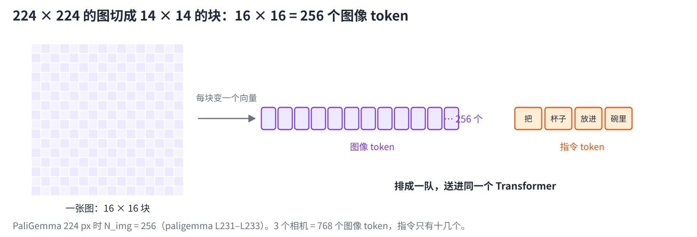
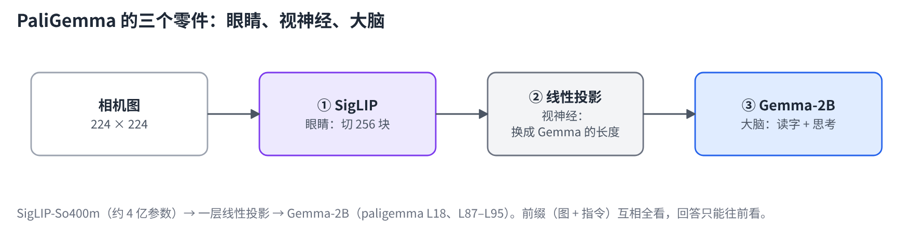
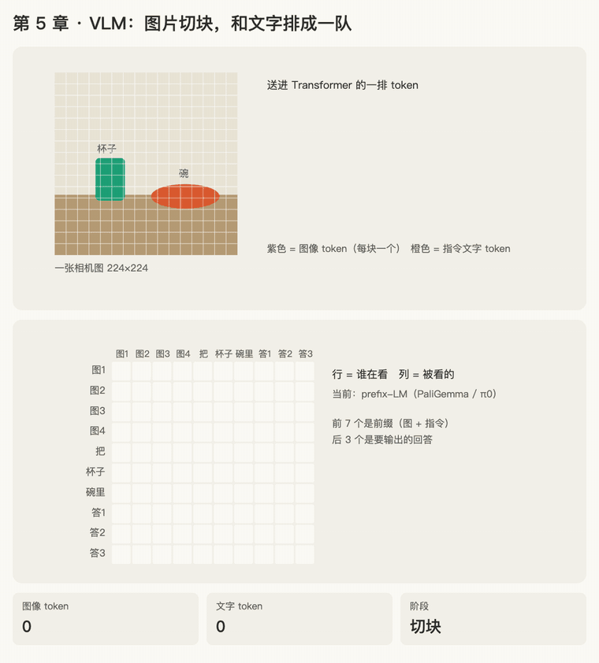

第 5 章 · VLM：图片切块和文字一起排队进 Transformer
本地运行
git clone https://github.com/wikieden/vla-from-scratch
cd vla-from-scratch/code/notebooks
pip install jupyterlab torch numpy
jupyter lab ch05_vlm.ipynb也可以下载后直接用 VS Code 打开 .ipynb 运行。需要 GPU 的章节在 Colab 里选「代码执行程序 → 更改运行时类型 → GPU」。
本章回答：VLA 里的"VL"（看 + 听）是怎么实现的？一张图怎么变成 Transformer 能吃的东西？
讲解日期：2026-11-04 · 上一章：第 4 章 多峰 · 下一章：第 6 章 动作当词
对应原文：materials/text/papers/paligemma-2407.07726.txtL18、L87–L95、L166–L172（prefix-LM）、L189、L231–L233（256 个图像 token）；pi0-2410.24164.txtL864–L871
本章缩写：VLM = Vision-Language Model（视觉 / 语言 / 模型）；ViT = Vision Transformer（视觉 Transformer）；SigLIP = Sigmoid Loss for Language-Image Pre-training（sigmoid 损失 / 图文 / 预训练）；So400m = Shape-optimized 400M（形状优化 / 4 亿参数）；LM = Language Model（语言模型），prefix-LM = 前缀语言模型。全表见 appendix-glossary.md
讲解
第 1 步：图片切成小块，每块变一个"词"
白话类比：拼图
Transformer 只会处理"一排向量"（transformer-deep-dive 讲义里每个词是一个向量）。图片不是一排词，怎么办？把它切成拼图块：
- 把一张 224 × 224 像素的图，切成很多个 14 × 14 像素的小方块（patch）；
- 每个小方块里的像素数字拉成一长串，乘一个矩阵，变成一个和词向量一样长的向量；
- 于是一张图就变成了"一排向量"，每个向量叫一个图像 token，和文字 token 地位一样。
这一步就是 ViT（Vision Transformer）的做法，transformer-deep-dive 的 07-vision 有原论文；nvidia-cosmos3 讲义第 4 步"图片和视频也能当 token"讲的也是它。
VLM = 图像 token + 文字 token 排成一队
[图块1] [图块2] … [图块N] [把] [杯子] [放进] [碗里]
└────── 图像 token ──────┘ └────── 文字 token ──────┘
一起送进同一个 Transformer
能同时看图和读字的模型叫 VLM（Vision-Language Model）。它在网上几十亿张图文配对数据上训练过，所以知道"杯子长什么样""碗在哪""左边是哪边"。VLA 就是在 VLM 的基础上，再教它输出动作。
真实的例子：π0 的骨干 PaliGemma
- 看图部分用 SigLIP（一个 ViT），读字和思考部分用 Gemma 2B；
- 224 px 分辨率下，一张图变成 \(N_\text{img}\) = 256 个图像 token（
materials/text/papers/paligemma-2407.07726.txt第 231–233 行："resolution 224px (hence, N_img = 256 image tokens)"）。

图 5-1 · 每块变一个向量，和指令 token 排成一队。
第 2 步：PaliGemma 长什么样
PaliGemma 是 Google 开源的一个 3B（30 亿参数）VLM，π0、π0.5 都用它当骨干。它只有三个零件（paligemma-2407.07726.txt 第 18、87–95、189 行）：
相机图 224×224
│
▼
① SigLIP-So400m（看图的 ViT，约 4 亿参数）：切 256 块 → 256 个图像向量
│
▼
② 一层线性投影（linear projection）：把图像向量"翻译"成 Gemma 认识的长度
│
▼
③ Gemma-2B（读字 + 思考的语言模型，decoder-only Transformer）
输入：[256 个图像 token] [指令文字 token] → 输出：回答文字
白话类比：① 是眼睛，② 是视神经（把眼睛的信号转成大脑能读的格式），③ 是大脑。
为什么 π0 选它：够小（3B，机器人上跑得动），权重公开，而且论文专门测过"拿来微调做别的任务"效果好（PaliGemma 的定位就是 "a versatile 3B VLM for transfer"，即论文标题）。
遮挡规则：prefix-LM
还记得 nvidia-cosmos3 讲义里的"遮挡（mask）：谁能看见谁"吗？PaliGemma 把输入分成两段，规则不同（第 166–172 行）：
| 段 | 包含 | 能看见谁 |
|---|---|---|
| 前缀（prefix） | 图像 token + 指令文字 | 前后都能看（full attention）：图像 token 也能"偷看"后面的指令 |
| 后缀（suffix） | 模型要输出的回答 | 只能看前面（自回归，写作文式） |
原文："we have full (unmasked) attention on the whole input, i.e. the image and prefix tokens. In this way, image tokens can also "lookahead" at the task at hand"。
π0 沿用了这个思路，并把动作也加成一段：动作段内部前后都能看，但前面的段看不到后面的段（pi0-2410.24164.txt 第 864–871 行，附录的 block-wise 掩码）。第 8 章细讲。

图 5-2 · 眼睛 SigLIP、视神经一层线性投影、大脑 Gemma-2B。
场景代码：LeRobot 的 π0 就用 PaliGemma 当大脑，配置里写着它的分词器和 Gemma 尺寸（materials/code/lerobot/repo/src/lerobot/policies/pi0/configuration_pi0.py L33、L107）：
from lerobot.policies.pi0.configuration_pi0 import PI0Config
cfg = PI0Config()
cfg.paligemma_variant # "gemma_2b"：大脑用 Gemma-2B
cfg.text_tokenizer_name # "google/paligemma-3b-pt-224"：224 px，一张图 256 个图像 token
动画演示：图片切块成 token，prefix-LM 遮挡

可交互版：animations/05-vlm-tokens.html（用浏览器打开，可播放、单步、换随机数重来）。
怎么看：
- 左边的图一行一行被切开：每行 16 块，每块变成右边的一个紫色 token，16 行切完正好 256 个。
- 接着接上 4 个橙色的指令文字 token，它们和图像 token 排成一队送进同一个 Transformer。
- 下半部分是遮挡矩阵（行 = 谁在看，列 = 被看的，蓝色 = 能看见），逐行亮起。前 7 个（图 + 指令）是前缀，彼此全能看，所以右上角那片蓝色表示图像 token 能看到后面的指令；后 3 个回答只能看前面。交互版可切到"纯因果"对比，那片蓝色会消失（第 2 题）。
练习与作答记录
题 1：一张 224 × 224 的图，切成 14 × 14 的小方块。 1. 横着能切几块？竖着能切几块？ 2. 一共多少个图像 token？和上面 PaliGemma 的 256 对得上吗？ 3. 如果机器人有 3 个相机，每个相机一张图，光图像就有多少个 token？
作答（2026-11-04，原话）：16*16，一共256个图像token能对上，另外PaliGemma解释下，机器人有3个相机，那就是768个 ✓
点评：全对。224 / 14 = 16，16 × 16 = 256，和 PaliGemma 对上；3 个相机 × 256 = 768 个图像 token，而一句指令通常只有十几到几十个 token，图像占了输入的绝大部分。这一点后面讲"为什么 VLA 推理慢"时会用到。追问的"PaliGemma 是什么"见第 2 步。
题 2：在 PaliGemma 的 prefix-LM 遮挡规则下，图像 token 能看到指令"把杯子放进碗里"吗？如果能看到，对"从图里找到杯子"有什么好处？
作答（2026-11-04，原话）：能，对于后续按照目的预测有好处 ✓
点评：对。说得再具体一点：图像 token 在"看图"的时候已经知道要找什么，所以杯子和碗所在的那些图块会被重点加工，背景里的书、墙不太重要。
类比：同一个房间，"随便看一眼"和"找钥匙时看一眼"，看到的重点完全不同。如果图像 token 看不到指令（纯因果，图在前、字在后），它只能"随便看"，要等到后面的文字 token 再回头从图里挑信息。
口诀
图片切成拼图块，一块一个 token，和文字排一队；
眼睛 SigLIP，视神经一层线性，大脑 Gemma；前缀互相看，回答往前看。
本章复习卡片
V10 图片怎么变 token、V11 PaliGemma 的三个零件和 prefix-LM（见 review.md）
附录 · 延伸阅读
留给以后深入学习用，不影响本章主线。★ 是建议先读的。
推荐阅读
| 读什么 | 读哪里 | 读它为了什么 |
|---|---|---|
| ★ PaliGemma（Beyer 等，2024） | paligemma-2407.07726.txt L87–L95、L166–L172、L231–L233 |
三个零件、prefix-LM、256 个 token |
| ViT | transformer-deep-dive 的 07-vision 材料 |
切块成 token 的原始做法 |
| 《从零读懂 Transformer》第 17 章 因果 mask | 谁能看见谁 | prefix-LM 是在因果 mask 上开一个口子 |
| 第 8 章 π0 | 三块注意力 | prefix-LM 再细分一层 |
数学原理
- 切块数：\((H/p) \times (W/p)\)，H、W 是图的边长，p 是块边长。
- 注意力遮挡：一个 0/1 矩阵，第 i 行第 j 列为 1 表示 token i 能看见 token j。
公式清单
| 公式 | 意思 |
|---|---|
| \(N_{\text{img}} = (224/14)^2 = 256\) | 一张图的图像 token 数 |
| 前缀全看、后缀因果 | prefix-LM 的遮挡规则 |
代码对照：把本章的数字用代码算一遍
纯 Python + NumPy，不需要 GPU。代码在仓库本地
vla-deep-dive/solutions/chapter-code/ch05_vlm.py，配套测试tests/test_ch05.py：
bash cd vla-deep-dive/solutions/chapter-code uv run python ch05_vlm.py uv run pytest tests/test_ch05.py
讲义 ↔ 代码：
| 讲义 | 写法 | 跑出来 |
|---|---|---|
| 第 1 步 | num_patches(224, 14) |
256；3 个相机 768 |
| 第 2 步 | prefix_lm_mask(7, 3) |
前 7 行前 7 列全 1；后 3 行下三角 |
代码里才看得到的 2 件事：
prefix_lm_mask先建一个下三角（纯因果），再把左上角前缀块整块改成 1，这一步就是 prefix-LM 比纯因果多出来的那片。- 这里的 7 个前缀只是玩具（4 个图像 + 3 个指令）；真实 PaliGemma 是 256 + 指令长度。
自己改一改（不影响练习答案）：
- 把
num_patches的分辨率改成 448，看图像 token 变成多少。 - 把
prefix_lm_mask的前缀长度改成 0，看它是不是退化成纯因果。